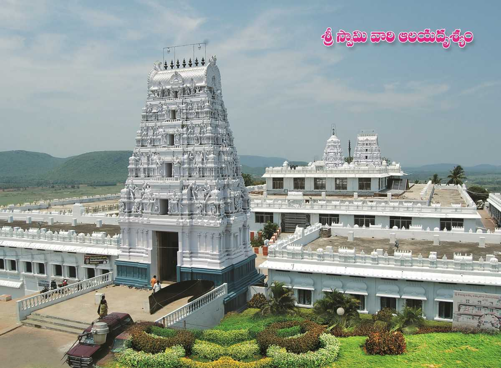
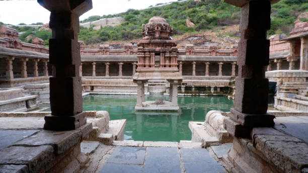

Situated in the Chittoor district of Andhra Pradesh, Tirupati is known for Lord Venkateshwara Temple, one of the most visited pilgrimage centers in the world.
sculpture of bull named Nandi at Lepakshi, Andhra Pradesh, India. This is the largest in India and this is carved out of huge rock bounder.
Anantapur, officially Anantapuramu, is a city in Anantapur district of the Indian state of Andhra Pradesh.

Annavaram is primarily known for the Sri Veera Venkata Satyanarayana Swamy Temple, a prominent Hindu temple dedicated to Lord Satyanarayana, an incarnation of Vishnu, located atop Ratnagiri Hill.
Chittoor is famous for its rich cultural heritage, ancient temples like the Tirumala Venkateshwara Temple (Tirupati Balaji).
Akasaganga Teertham is a waterfall in Tirupati, located at a distance of 3 km from the main temple. The waterfall has water flowing all throughout the year and holds immense religious significance.
Known as the Capital of Andhra Pradesh, Amaravathi is a planned city on the banks of the River Krishna. Amaravathi is renowned for being a site of a Buddhist Stupa that is a semi-hemispherical structure containing Buddhist relics and often called the Abode of God.
Endearingly known as the ‘Grand Canyon of India’, Gandikota is a small and quaint village in the Kadapa district of Andhra Pradesh. Flanked by River Pennar on the right side, the village is famous for the spectacular gorges formed by the river cutting through Erramala Hills.

Borra Caves were formed as a result of the flow of Gosthani River on the limestone deposits. These caves are known for the breath-taking formations such as Shiva-Parvathi, Rishi's Beard, Mother-Child, Crocodile, Human Brain, Tiger and Cows udder.

Yaganti, in the Kurnool district of Andhra Pradesh in India, is a popular tourist site that is famous for its temple of Sri Yagantiswamy, which is dedicated to Lord Shiva and is the perfect way to get a feel of the Andhra Pradesh tourism.
Nellore is a beautiful city lying on the banks of River Penna, a Municipal Corporation in the South Indian state of Andhra Pradesh. Anciently known as Vikrama Simhapuri, it derived its name from "Nelluru", a combination of Tamil words "Nel" and "Ooru" where Nel stands for Paddy and Ooru means Place.